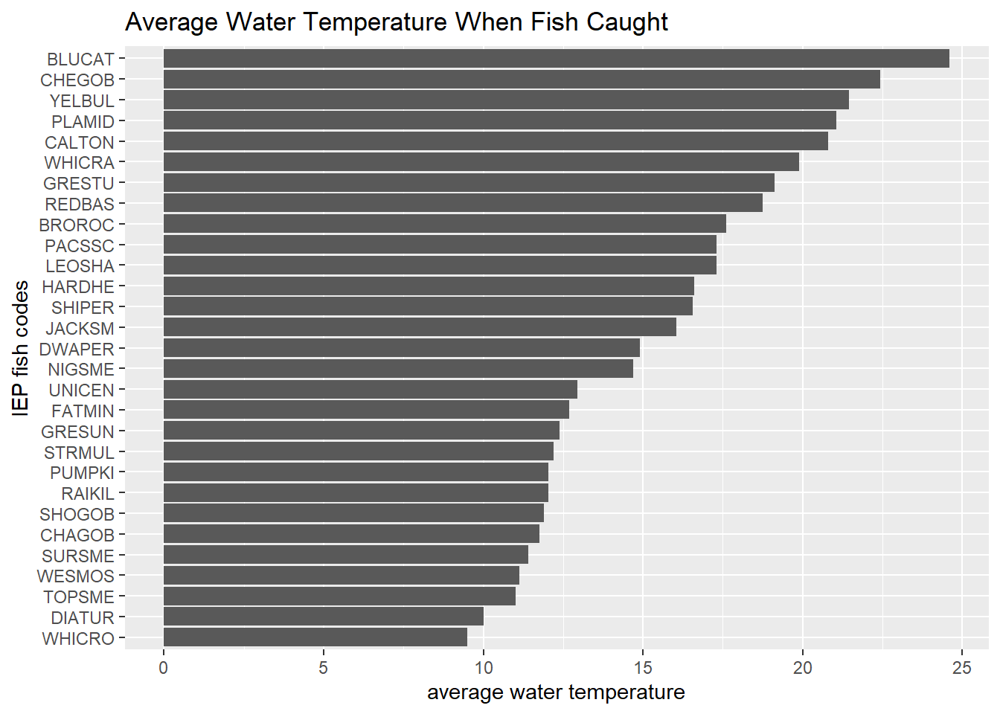
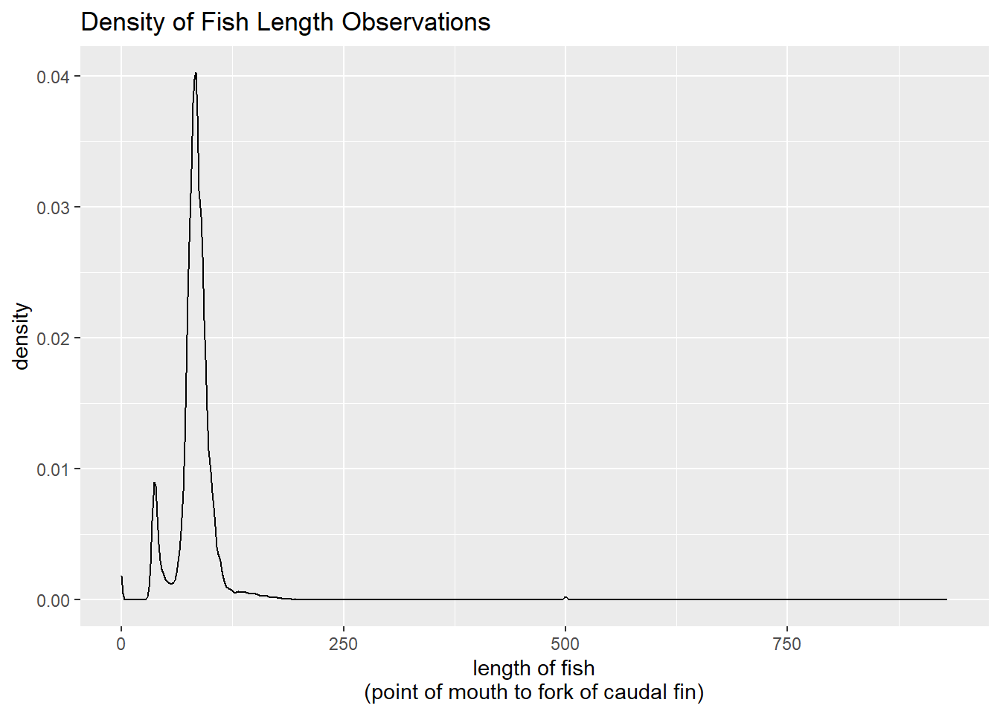
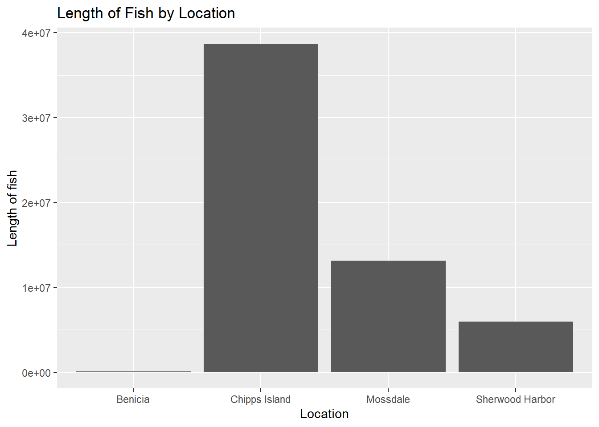
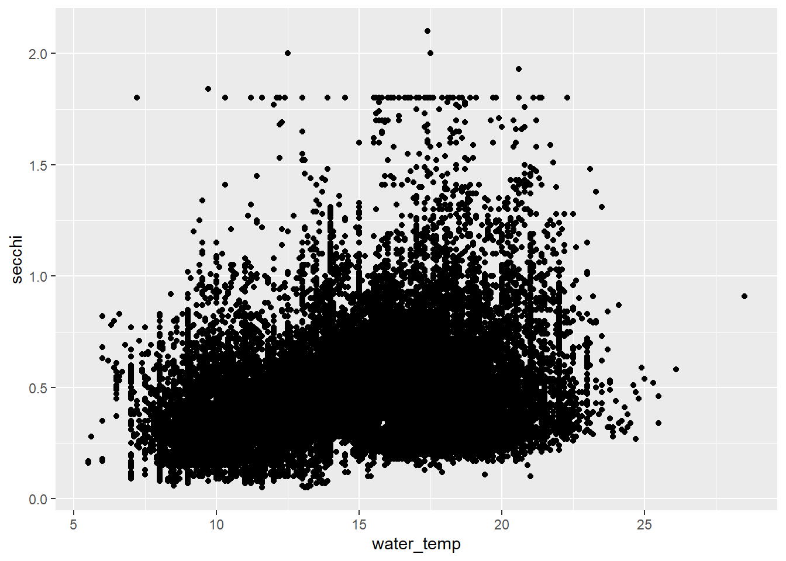

library(tidyverse)
library(here)
library(janitor)HW 2 Data Exploration
read in libraries
read in data
fish_02_24 <- read_csv(here("data", "2002-2024_DJFMP_trawl_fish_and_water_quality_data.csv"))
locals <- read_csv(here("data", "DJFMP_Site_Locations.csv"))initial exploration of data
print(colnames(fish_02_24)) [1] "Location" "RegionCode" "StationCode"
[4] "SampleDate" "SampleTime" "MethodCode"
[7] "GearConditionCode" "WeatherCode" "DO"
[10] "WaterTemp" "Turbidity" "Secchi"
[13] "SpecificConductance" "TowNumber" "SamplingDirection"
[16] "TowDuration" "FlowDebris" "FlowmeterStart"
[19] "FlowmeterEnd" "FlowmeterDifference" "Volume"
[22] "OrganismCode" "IEPFishCode" "CommonName"
[25] "MarkCode" "StageCode" "Expression"
[28] "ForkLength" "RaceByLength" "TagCode"
[31] "RaceByTag" "ArchivalID" "SpecialStudy"
[34] "SpecialStudyID" "GeneticID" "Probability1"
[37] "GeneticID2" "Probability2" "SexGeneID"
[40] "Ots28" "GeneticTest" "GeneticModel"
[43] "Count" print(sum(is.na(fish_02_24)))[1] 13362572print(sum(is.na(fish_02_24$SpecialStudy)))[1] 743258print(nrow(fish_02_24))[1] 759703#SpecialStudy has 743,258 NAs out of 759,703 entries (97 percent)print(unique(fish_02_24$Location))[1] "Chipps Island" "Mossdale" "Sherwood Harbor" "Benicia" print(unique(fish_02_24$RegionCode))[1] 3 5 2 6print(unique(fish_02_24$CommonName)) [1] "American Shad" "Chinook Salmon"
[3] "Longfin Smelt" "Splittail"
[5] "Striped Bass" "steelhead"
[7] "No catch" "Pacific Herring"
[9] "Pacific Staghorn Sculpin" "Channel Catfish"
[11] "Siberian prawn" "Shokihaze Goby"
[13] "Threadfin Shad" "Yellowfin Goby"
[15] "Delta Smelt" "Shimofuri Goby"
[17] "Starry Flounder" "Warmouth"
[19] "River Lamprey" "Sacramento Pikeminnow"
[21] "Pacific Lamprey" "White Sturgeon"
[23] "unid fish" "Threespine Stickleback"
[25] "Chameleon Goby" "Tule Perch"
[27] "Northern Anchovy" "Estuarine jellyfish"
[29] "comb jelly" "Topsmelt"
[31] "Bluegill" "Green Sunfish"
[33] "White Catfish" "Green Sturgeon"
[35] "Golden Shiner" "Jacksmelt"
[37] "Largemouth Bass" "Wakasagi"
[39] "Shiner Perch" "Black Crappie"
[41] "Mississippi Silverside" "Black Sea jellyfish"
[43] "shrimp unknown" "Sacramento Sucker"
[45] "Redear Sunfish" "Rainwater Killifish"
[47] "Goldfish" "Prickly Sculpin"
[49] "Common Carp" "Dwarf Surfperch"
[51] "Pumpkinseed" "Hitch"
[53] "White Crappie" "Red Shiner"
[55] "Sacramento Blackfish" "Smallmouth Bass"
[57] "Black Bullhead" "Spotted Bass"
[59] "Lamprey unknown" "Brown Bullhead"
[61] "Western Mosquitofish" "Fathead Minnow"
[63] "Bigscale Logperch" "Hardhead"
[65] "Centrarchid unknown" "Diamond Turbot"
[67] "White Croaker" "red-eye medusa"
[69] "Bass unknown" "Yellow Bullhead"
[71] "Surf Smelt" "Blue Catfish"
[73] "Crangon sp." "Oriental shrimp"
[75] "Night Smelt" "Palaemonetes Sp."
[77] "Cheekspot Goby" "Plainfin Midshipman"
[79] "Brown Rockfish" "Redeye Bass"
[81] "California Tonguefish" "Striped Mullet"
[83] "Leopard Shark" "Heptacarpus sp."
[85] "Dock shrimp" "moon jellyfish"
[87] "Mud shrimp" potential questions
How does habitat disturbance influence amount of fish recorded at a site? (compare habitat disturbance to total observations) Is there a pattern between fish type and habitat?
new potential question: have the number of fish recordings changed over time?
clean data
fish_clean <- fish_02_24 |>
clean_names() |>
select_if(~ sum(is.na(.)) < 750000)wrangle data
fish_wrangle <- fish_clean |>
group_by(iep_fish_code) |>
summarize(mean_water_temp = mean(water_temp)) |>
na.omit() |>
mutate(iep_fish_code = fct_reorder(iep_fish_code, mean_water_temp))visualizations
viz_1 <- ggplot(fish_wrangle, aes(x = iep_fish_code, y = mean_water_temp)) +
geom_col() +
coord_flip() +
labs(
title = "Average Water Temperature When Fish Caught",
y = "average water temperature",
x = "IEP fish codes"
)
print(viz_1)
chinook <- fish_clean |>
filter(common_name == "Chinook Salmon")plot_1 <- ggplot(chinook, aes(x = fork_length)) +
geom_density() +
labs(
title = "Density of Fish Length Observations",
x = "length of fish\n(point of mouth to fork of caudal fin)"
)
print(plot_1)
plot_2 <- ggplot(fish_clean, aes(x = location, y = fork_length)) +
geom_col() +
labs(
title = "Length of Fish by Location",
x = "Location",
y = "Length of fish"
)
print(plot_2)
plot_3 <- ggplot(chinook, aes(x = water_temp, y = secchi, na.rm = TRUE)) +
geom_point()
print(plot_3)
- What have you learned about your data? Have any potentially interesting patterns emerged?
I have discovered that there are a lot of NAs in my data, but luckily it’s also fairly clean and the metadata is really good. I did some cleaning, but will definitely need to do more when I decide what variables I’m interested in. No obvious patterns have emerged, but I think that the potential to look at different locations and different fish/catch types could be really cool.
- In HW #1, you outlined some questions that you wanted to answer using these data. Have you made any strides towards answering those questions? If yes, how so? If no, what next steps do you need to take (e.g. I need to create X plot type, I still need to track down Y data, I need to restructure existing data so that you can visualize it in Z ways, etc.)?
potential questions:
How does habitat disturbance influence amount of fish recorded at a site? (compare habitat disturbance to total observations) Is there a pattern between fish type and habitat?
new potential question: have the number of fish recordings changed over time?
In the description of the data it mentioned habitat disturbance, but I haven’t seen that in the data set, I need to dig into the metadata some more to work on my first potential question. The second question is pretty easy to answer, although my data set is huge, so I need to work on making my visualizations legible.
- What challenges do you foresee encountering with your data? These can be data wrangling and or visualization
I expect to have challenges with all my NAs and also with all my data points. I want to still have interesting data left, but in some cases the vast majority of some columns are NAs. I need to dig into them to see if it’s worth salvaging or if I should just remove those columns all together. I also have so many data points, that the visualization might be a bit difficult, especially as I personally prefer the look of simpler and easier to understand infographics.